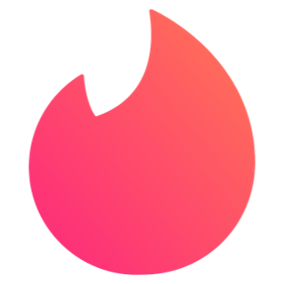
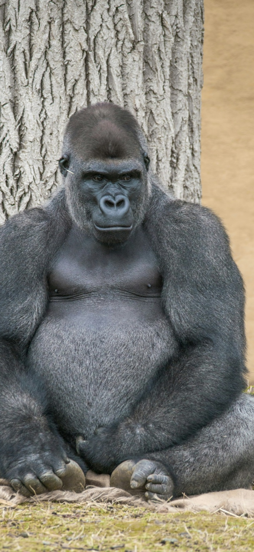

<title>Tinder swipe</title>

<main>
    <section>
        <header>
            
        </header>

        <div class="cards">
            <article>
                
                <h2>Leon <span>24</span></h2>
                <div class="chose nope">NOPE</div>
                <div class="chose like">LIKE</div>
            </article>

            <article>
                
                <h2>Gorilla <span>35</span></h2>
                <div class="chose nope">NOPE</div>
                <div class="chose like">LIKE</div>
            </article>

            <span>
                No hay más animales en la selva...<br/>
                intentalo más tarde
            </span>
        </div>

        <footer>
            <button class="is-fresh" aria-level="undo"></button>
            <button class="is-remove is-big" aria-level="remove"></button>
            <button class="is-star" aria-level="star"></button>
            <button class="is-fav is-big" aria-level="fav"></button>
            <button class="is-zap" aria-level="zap"></button>
        </footer>

    </section>
</main>

<style>
    *, *::before, *::after{
        box-sizing: border-box;
        margin: 0;
        padding: 0;
    }

    body{
        font-family: system-ui, -apple-system, BlinkMacSystemFont, 'Segoe UI', Roboto, Oxygen, Ubuntu, Cantarell, 'Open Sans', 'Helvetica Neue', sans-serif;
        display: grid;
        place-content: center;
        min-height: 100vh;
        overflow: hidden;
        user-select: none;
        background: #efefef;
    }

    main{
        background: url('./img/iphone.png') no-repeat;
        
        background-size:contain;
        width: 320px;
        height: 640px;
        display: flex;
        filter: drop-shadow(0 0 10px rgba(0, 0, 0, 0.3));
    }

    section{
        background-color: #ffffff;
        width: 100%;
        border-radius: 30px;
        display: flex;
        gap: 24px;
        flex-direction: column;
        overflow: hidden;
        position: relative;
        padding: 16px 6px;
        margin: 16px;

    }

    header{
        display: flex;
        justify-content: center;

        & img{
            width: 24px;
            height: 24px;
        }
    }

    footer{
        display: grid;
        grid-template-columns: repeat(5,1fr);
        gap: 12px;
        padding: 0 24px;
        justify-content: center;
        align-items: center;

        & button{
            background: url('./img/tinder-icons.webp') no-repeat;
            background-position: 0px 0px;
            background-size: 170px;
            height: 32px;
            width: 32px;
            border-radius: 50%;
            border: 0;
            cursor:pointer;
            transition: scale .3s ease;

            &:hover{
                scale: 1.4;
            }

            &.is-big{
                background-size: 265px;
                width: 48px;
                height: 48px;
            }

            &.is-fresh{
                background-position: -138px;
            }

            &.is-remove{
                background-position: -161px;
            }

            &.is-star{
                background-position: -69;
            }

            &.is-fav{
                background-position: -54
            }


            
        }
    }

    .cards{
        position: relative;
        width: 100%;
        height: 100%;
        margin: 0 auto;

        & >span{
            display: grid;
            place-content: center;
            color: #777;
            font-size: 14px;
            text-align: center;
            height: 100%;
            z-index: -1;
        }

        & article{
            border-radius: 8px;
            box-shadow: 0 0 10px rgba(0, 0, 0, 0.3);
            cursor: grab;
            overflow: hidden;
            position: absolute;
            inset: 0;
            width: 100%;
            height: 100%;
            z-index: 2;

            &.go-left{
                transform: translateX(-200%) rotate(-30deg) !important;
            }

            &.go-rigth{
                transform: translateX(200%) rotate(30deg) !important;
            }

            &.go-left,
            &.go-rigth {
                transition: transform .3s ease, rotate .3s ease;
            }

            &.reset{
                transition: transform .3s ease;
                transform: translateX(0) !important;
            }

            & img{
                width: 100%;
                height: 100%;
                object-fit: cover;
            }

            & h2{
                color: white;
                position: absolute;
                inset: 0;
                display: flex;
                align-items: end;
                height: 100%;
                width: 100%;
                padding: 16px;
                z-index: 3;
                background: linear-gradient(
                    to top,
                    #00000088 20%,
                    transparent 40%
                )
            }

            & span{
                margin-left: 6px;
                font-size: 18px;
                line-height: 1.4;
                font-weight: 400
            };
        }
    }

    .chose{
        position: absolute;
        top: 32px;
        border: 4px solid;
        padding: 4px 8px;
        border-radius: 8px;
        font-weight: bold;
        font-size: 24px;
        text-shadow: 0 0 10px rgba(0, 0, 0, .3);
        opacity: 0;
    }

    .nope{
        border-color: #ff6e63;
        color: #ff6e63;
        transform: rotate(30deg);
        right: 16px;
    }

    .like{
        border-color: #63ff68;
        color: #63ff68;
        left: 16px;
        transform: rotate(-30deg);  
    }

</style>

<script>
    const DECISION_THRESHOLD = 75
    let isAnimating = false
    let pullDeltax = 0 //distancia de la card detras del drag

    function starDrag(event){

        if(isAnimating) return

        //tomar el primer articulo
        const actualCard = event.target.closest('article')
        if(!actualCard) return

        //tomar la primera pocición del mouse
        const startX = event.pageX ?? event.touches[0].pageX

        //Escuchar los eventos del mouse o del touch
        document.addEventListener('mousemove', onMove)
        document.addEventListener('mouseup', onEnd)

        document.addEventListener('touchmove', onMove, {passive: true})
        document.addEventListener('touchend', onEnd, {passive:true})

        function onMove(event){
            //posisión actual del mouse o el dedo
            const currentX = event.pageX ?? event.touches[0].pageX

            //la distancia desde la inicial hasta la pisición actual
            pullDeltax = currentX - startX

            isAnimating = true

            const deg = pullDeltax / 14
        

            actualCard.style.transform = `translateX(${pullDeltax}px) rotate(${deg}deg)`

            actualCard.style.cursor = 'grabbing'

            //cambiar opacidad e el nope y el yes

            const opacity = Math.abs(pullDeltax) / 100
            const isRight = pullDeltax > 0

            const choiseEl = isRight
            ? actualCard.querySelector('.chose.like')
            : actualCard.querySelector('.chose.nope')

            choiseEl.style.opacity = opacity

            //no hay distancia recorrida
            if(pullDeltax === 0) return

            console.log(pullDeltax)
        }

        function onEnd(event){
            document.removeEventListener('mousemove', onMove)
            document.removeEventListener('touchend', onEnd)

            document.removeEventListener('touchmove', onMove)
            document.removeEventListener('touchend', onEnd)

           //saber si el usuario tomo una decisión
          const decisionMade = Math.abs(pullDeltax) >= DECISION_THRESHOLD

          if(decisionMade){
            const goRigth = pullDeltax >= 0
            const goLeft = !goRigth

            actualCard.classList.add(goRigth ? 'go-rigth' : 'go-left')
            actualCard.addEventListener('transitionend', () =>{
                actualCard.remove()
            })
          }else{
            actualCard.classList.add('reset')
            actualCard.classList.remove('go-rigth', 'go-left')

          }

          //reseteamos las variables

          actualCard.addEventListener('transitionend', ()=>{
            actualCard.removeAttribute('style')
            actualCard.classList.remove('reset')

            pullDeltax = 0
            isAnimating = false
          })

        }

    }

    document.addEventListener('mousedown', starDrag)
    document.addEventListener('touchstart', starDrag, {passive:true})
</script>